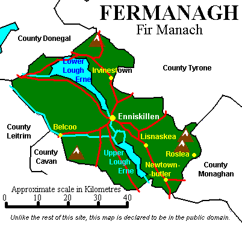
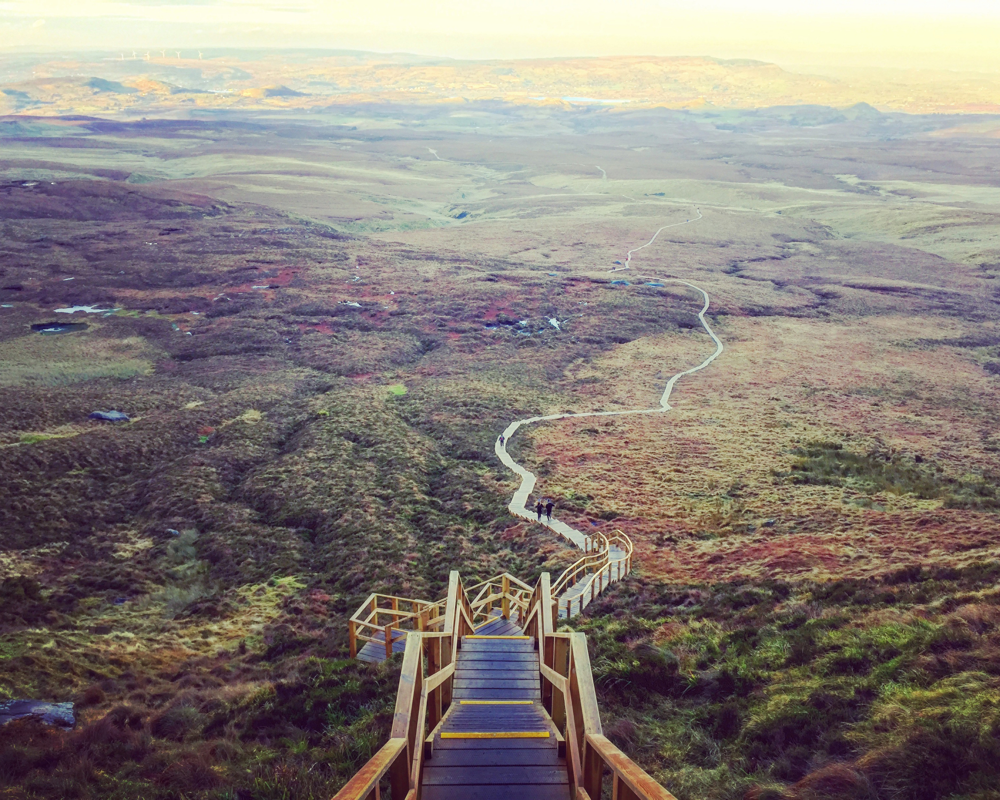
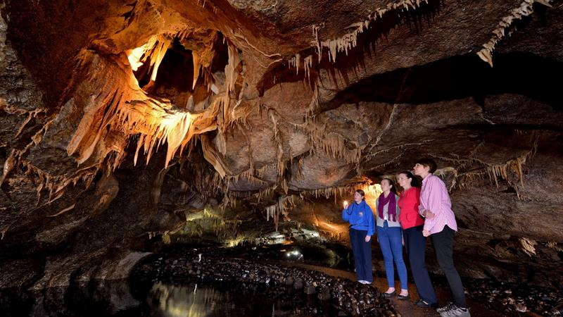

I'm from a town called Enniskillen in County Fermanagh. It's situated in the North west of Ireland.
Enniskillen is the county capital and is the biggest town in the county.

Some famous sights in County Fermanagh include the following:
| The Cuilcagh Boardwalk |  |
The Cuilcagh Boardwalk Trail also nicknamed the Stairway to Heaven Walk is located in Co. Fermanagh. The route meanders through one of the largest expanses of blanket bog in Northern Ireland, traversing over tracks, boardwalk and staircase. A steep climb is required to reach the viewing platform on Cuilcagh Mountain which provides breath taking views of the surrounding low lands. |
|
| The Marblearch Caves |  |
The Marble Arch Caves is host to one of the finest show caves in Europe. Visitors are guided through a fascinating natural underworld of rivers, waterfalls, winding passages and lofty chambers while stunningly beautiful cave formations glisten all around. |